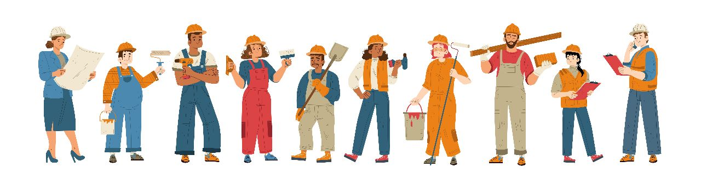

Technology
I use the HTML / CSS to make a responsive static web design. For custom styling i created a seperate styling sheet. In that way i just write once and used it multiple times anywhere by just calling a class name. For the development i use visual code which very light weight and powerful IDE. t has a good code completion highlighting syntax and hints which shows and errors or warnings as you are typing which are very helpful. It have predicted codes which makes work easy. It will be fun working on visual studio for this application because the tech I have told you is much easier to use on this software as it provide all the essential features. Its not about the confident for me or anything I know or not about it, what intrigued me is as I start to create something the challenge and research comes out of it, make realize on every point there is no end for tech&framework